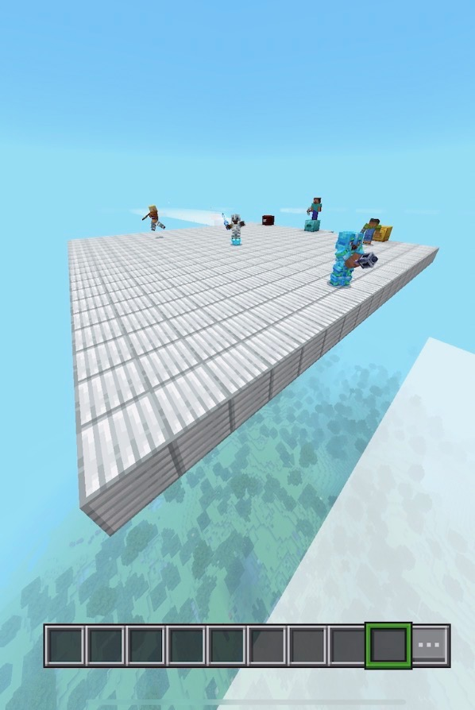

What is IslandSMP?
IslandSMP is a fun and friendly Public Minecraft Survival Server.
How do I join IslandSMP?
If you want to join IslandSMP, on Java click "Add Server", then for the IP type IslandSMP.apexmc.co.
For Bedrock, click "Add Server", then type for the IP IslandSMP.apexmc.co and for the port type 25756.